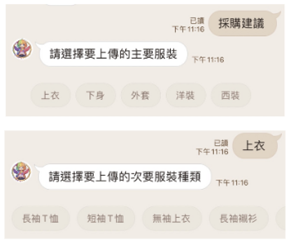
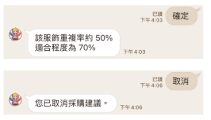

採購建議介紹
使用者拍照上傳希望購買的服飾，系統自動比對衣櫃中的現有服飾， 判斷想購買商品的重複率和適合程度，降低衝動購物機會，避免重複購買類似物品，減少浪費。

選擇服飾種類（LineBot 聊天機器人示例）
點選採購建議，先選擇主要和次要的服飾種類。

採購建議流程
(1) 選擇完服飾種類，上傳圖片讓系統辨識。
(2) 系統回傳去背圖片和辨識結果。
(3) 若有錯誤，使用者可以選擇重新辨識、修改描述。
重新辨識
(1) 點選重新辨識，系統會重新執行一次圖片去背和顏色、圖案辨識。
(2) 若辨識正確，點選確定即可。
✧ 示意圖片中，點選重新辨識後，辨識結果由米白色修正為白色。
修改描述
(1) 點選修改描述，可以修改顏色、描述。
(2) 點選確定之後進行下一步。

採購建議結果
(1) 點選確定之後，系統判斷該服飾的重複率、適合程度並回傳。
(2) 點選取消之後，就取消該次的採購建議流程。